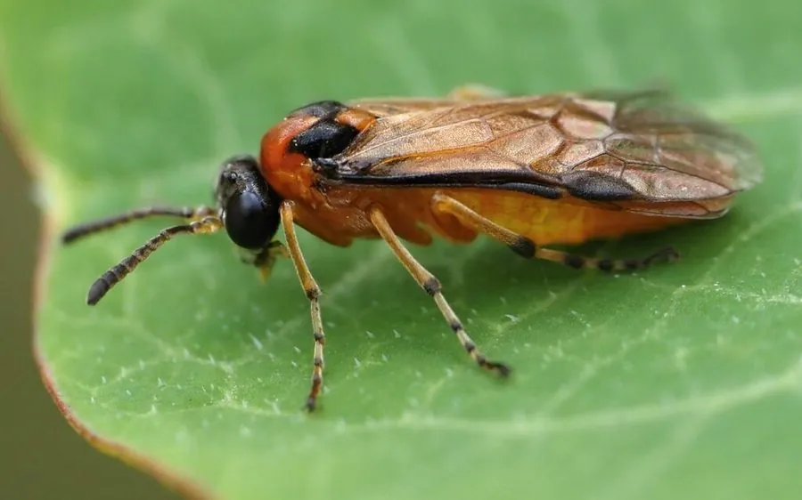

昆虫 · 动物界
叶蜂 Athalia rosae

外形似蝇、幼虫似毛虫的蜂类，幼虫群集啃食油菜、萝卜等十字花科叶片，是菜地常见害虫。
- 分类
- 门节肢动物门纲昆虫纲目膜翅目科叶蜂科属菜叶蜂属
- 栖息环境
- 油菜、萝卜、白菜等十字花科作物田与野生蔊菜丛
- 地理分布
- 欧洲、亚洲温带，中国南北菜区均有
- 保护级别
- 常见农业害虫，无保护需求
物种志
叶蜂的成虫体长约六至八毫米，头部和胸部黑色，腹部橙黄，翅透明，前翅前缘有一条明显的深色翅痣。它看起来像一只小蝇，但有两对膜质翅，属于膜翅目。幼虫体表光滑无毛，色泽翠绿或灰绿，外形极像鳞翅目的毛虫，但腹足数目更多，可据此区分。幼虫受惊时会把身体卷成 S 形，从叶面滚落。
它分布于欧洲、亚洲温带，中国南北菜区均有，栖息在油菜、萝卜、白菜等十字花科作物田和野生的蔊菜上。成虫在春夏季活动，雌蜂用锯状产卵管把卵产进叶片组织，幼虫孵化后群集取食叶肉，留下透明的叶脉，严重时整片叶子被吃光。它以老熟幼虫在土中结茧越冬，一年发生二至三代。防治以清除田间杂草寄主、幼虫期喷药和翻耕灭茧为主。
形态与习性
- 体长成虫约六至八毫米
- 体色头胸黑、腹部橙黄，翅有翅痣
- 幼虫体表光滑似毛虫，腹足较多
- 寄主油菜、萝卜、白菜等十字花科
- 危害群集取食叶肉，仅留透明叶脉
- 越冬老熟幼虫在土中结茧越冬
趣味知识
- 它长得像苍蝇，其实是蜂；幼虫长得像毛虫，其实是蜂的幼虫。
- 数一数幼虫的腹足就能分辨：叶蜂的腹足比蝴蝶幼虫多。
- 一群幼虫能把一片油菜叶啃得只剩透明的叶脉网。